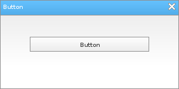

Löve Frames - The Button Object
Return to Index
Information
The button object functions much like a button you would see in a modern day GUI.
Example Use
local frame = loveframes.Create("frame")
frame:SetName("Button")
frame:CenterWithinArea(unpack(demo.centerarea))
local button = loveframes.Create("button", frame)
button:SetWidth(200)
button:SetText("Button")
button:Center()
button.OnClick = function(object, x, y)
object:SetText("You clicked the button!")
end
button.OnMouseEnter = function(object)
object:SetText("The mouse entered the button.")
end
button.OnMouseExit = function(object)
object:SetText("The mouse exited the button.")
end

Event Callbacks
OnClick - Called every time the object is clicked
- Arguments passed: self [object], mouse x [number], mouse y [number]
- Arguments passed: self [object], mouse x [number], mouse y [number]
local button = loveframes.Create("button")
button.OnClick = function(object)
print("The button was clicked!")
end
Methods
SetText - Sets the object's text
- Returns 1 value: text [string]
- Returns 1 value: clickable [boolean]
- Returns 1 value: enabled [bool]
object:SetText(text[string])GetText - Gets the object's text
- Returns 1 value: text [string]
local text = object:GetText()SetClickable - Sets whether or not the object is clickable
object:SetClickable(clickable[bool])GetClickable - Gets whether or not the object is clickable
- Returns 1 value: clickable [boolean]
local clickable = object:GetClickable()SetEnabled - Sets whether or not the object is enabled
object:SetEnabled(enabled[bool])GetEnabled - Gets whether or not the object is enabled
- Returns 1 value: enabled [bool]
local enabled = object:GetEnabled()